|
|
The salt KBr dissociates in water going from KBR®K+ + Br- Ci = total molarity = mol/L
Molar = moles/Liter 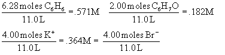 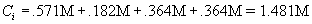 Converting equation to produce the osmotic pressure in psi yields:
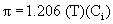
Alternate choices:
539 Psi (didn’t
account for dissociating) 5941 Psi (didn't convert to molar or account for dissociating)
7876 Psi (didn’t convert to molar) |
|
|
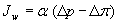
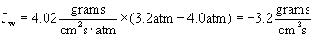
Alternate choices:
3.216 (switched pressure
differential and osmotic pressure) |
|
|
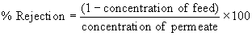
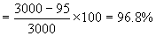
Alternate
choices:
|
|
|
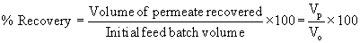
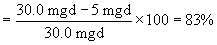
Alternate choices:
16% (numerator was feed-recovered (5mgd))
120% (switched feed and
product water) |
|
|
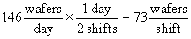
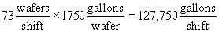 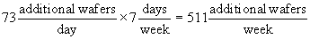
Alternate choices:
146 wafers/shift
(forget that there are two shifts per day)
255,500
gallons/shift (used wrong value for wafers/shift)
1022 wafers/week
(used wrong value for wafers/day) |
|
|
Solution-Based on modified version of equation 1: MW benzene = 78.11g/mol 20o C = 293 K 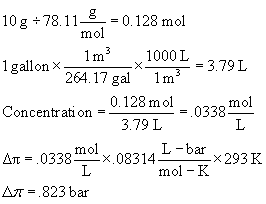 Alternate choices: 8.23 bar (wrong value for R) 64.3 bar (forgot to convert grams to moles) .055 bar (forgot to convert temp to K) |
|
|
From equation 5 and realizing that molecular weight of salt is 58.5 g/mol 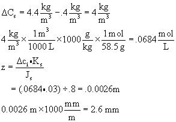 Alternate choices: .0029 mm (didn’t convert to mm) 2564 mm (forgot to convert m3 to L) 150 mm (didn’t convert from g to moles) |
|
|
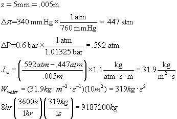 Alternate choices: 27561600 (forgot that it is only for 8 hours, not 24) 2116224000 (didn’t convert pressures) 9187.2 (didn’t convert from mm to m) |
|
|
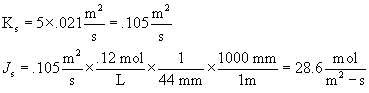 Alternate choices: 55440 (multiplied instead of divided by the membrane thickness) .027 (didn’t convert mm to m) 1364 (didn’t multiply by diffusion coefficient for K) |
|
|
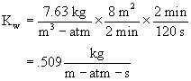 Alternate choices: 30.52 (in units of minutes) 1.017 (did not account for two minutes) 114.45 (need units check) |
|
|
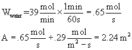 Alternate choices: 134.48 (in units of minutes) .189 (multiplied instead of divided) 11.31 (units of minutes and multiplied) |
|
|
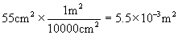 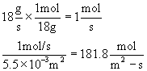 Alternate choices: 1.819 (didn’t square when converting) 32.73 (in terms of mass) .018 (in units of cm2) |
|
|
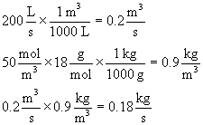 Alternate choices: 180 (units in liters) 10 (units in moles) 180000 (units check) |
|
|
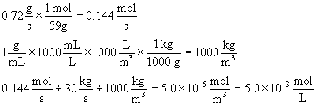
Alternate choices:
2.4 x10-5 (in terms of
mass)
4.8 x 10-6 (in volume instead
of mass)
1.44 x 10-4 (flux of
salt) |
|
|
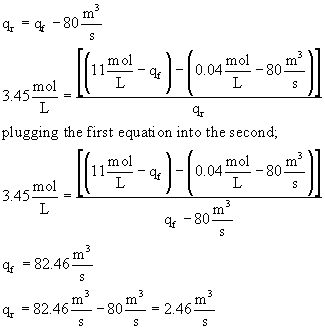 Alternate choices: Qr = 26.38 (didn’t convert m3 to L) Qr = 82.46 (confused Qr and Qf) Qr = 79.26 (confused flow rate and concentration) |
|
|
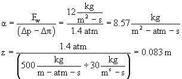
Alternate choices:
a
= 30 (subtracted atmospheric pressure)
a
= 21.42 (used 30 kg/m2-s instead
of 12 kg/m2-s)
z = 9.33 x 10-5 (multiplied by 30
instead of divided)
z = .0336 (used 12 kg/m2-s
instead of 30 kg/m2-s) |
|
|
Recovery is usually expressed as a percent: (19)
Rejection is a measure of how well a membrane
retains the passage of a
solute:
(20)
Alternate choices:
166% (.5/.3)
140 % (subtracted .3
from 1) 33% (confused feed concentration from percent recovery) |
|
|
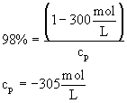 Alternate choices: 306.12 (didn’t subtract from 1) -14950 (subtracted rejection from 1) 15000 (subtracted rejection instead of concentration from 1) |
Reading Comprehension Questions
|
Indicate which is true:
Which of the following is true about cross-flow filtration?
Which of the following is a false statement about osmosis?
Which is an example of
osmosis?
What separation process
would be preferred for asbestos?
(see fig. 3)
During osmosis, the flow of
water through a U-tube will
stop when?
Indicate all that could pass through a membrane which rejects anything above MW 300.
|